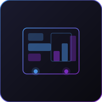

تحويل بيانات الأعمال المعقدة إلى رؤية واضحة وفورية لاتخاذ قرارات أفضل.
تساعد لوحات التحكم الذكية في BTS المؤسسات على تحويل بيانات الأعمال المعقدة إلى رؤية واضحة وفورية. بدلاً من الاعتماد على جداول البيانات المبعثرة أو التقارير المتأخرة أو الأنظمة المنفصلة، تصمم BTS لوحات تحكم تجمع مقاييس الأعمال الهامة في عرض مركزي واحد.
تساعد لوحات تحكم BTS المديرين التنفيذيين والفرق على مراقبة الأداء واتخاذ قرارات أسرع وأكثر استنارة. الهدف ليس فقط عرض البيانات، بل مساعدة الفرق على فهم ما يحدث، ولماذا هو مهم، وما هو الإجراء الذي يجب اتخاذه بعد ذلك.
المؤسسات التي تحتاج إلى رؤية مركزية وواضحة لأداء الأعمال عبر الفرق أو الأقسام أو المناطق.
تساعد BTS المؤسسات على تصميم لوحات تحكم تحول البيانات إلى رؤى قابلة للتنفيذ.
← العودة إلى الرئيسية ابدأ مشروعك ←